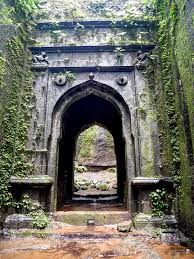
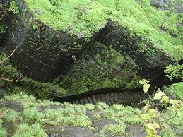

सुधागड किल्ला
Location : Click Here For Google Map
- माहिती
- सुधागड किल्ला महाराष्ट्र राज्याच्या रायगड जिल्ह्यात स्थित एक ऐतिहासिक किल्ला आहे. हा किल्ला खासकरून त्याच्या स्थापत्य रचनेच्या सौंदर्यामुळे प्रसिद्ध आहे. सुधागड किल्ला खूप उंचीवर वसलेला असून, त्याच्या शिखरावरून आसपासचा सुंदर डोंगर आणि परिसराचा अप्रतिम देखावा दिसतो.
किल्ल्याचे स्थापत्य सुंदर तटबंदी, दरवाजे आणि बुरुज यांसारख्या संरचनांमधून दर्शवले जाते. किल्ला शिवाजी महाराजांच्या काळात महत्त्वपूर्ण होता आणि याच्या संरक्षणासाठी त्याला उपयोगात आणले जात होते. किल्ल्याच्या आसपासच्या क्षेत्रामध्ये शिकार, किल्ल्याच्या विविध गोष्टी आणि निसर्ग सौंदर्य यांचा मिलाफ असतो.
सुधागड किल्ला, पर्यटनाच्या दृष्टीने एक आकर्षक स्थळ आहे. किल्ल्याचे ऐतिहासिक महत्त्व, अद्भुत दृश्ये आणि निसर्गाच्या सहवासात, येणारे पर्यटक अनुभवायला आकर्षित होतात. किल्ल्याच्या शिखरावर चढून त्याच्या ऐतिहासिकतेचा अनुभव घेणे एक रोमांचक आणि अविस्मरणीय अनुभव आहे.
Explore the historical beauty

